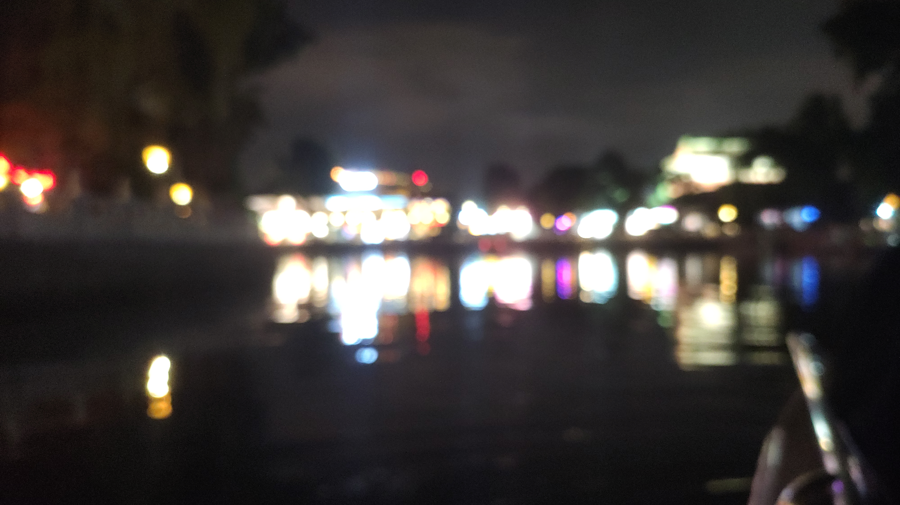
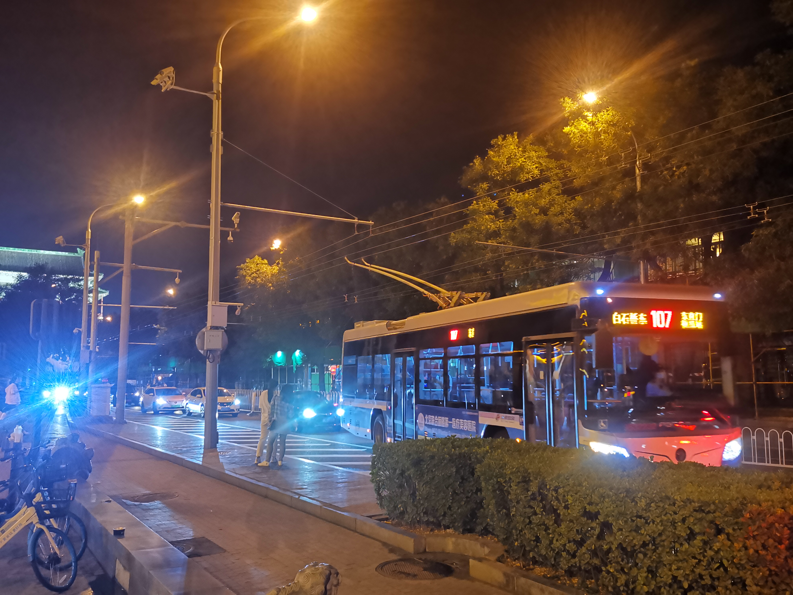

Day1
“老北京”一词最早对我来说是一种酸奶，就是那个后来被爆出来是用“老皮鞋”制作的酸奶。但是这两年的“老北京”随着互联网上一些人的功劳，甚至成为了优越的代表，尤其是对吃这块。北京传统的炒肝卤煮什么的也许是不对所有人喜好胃口，但是很多人就这这两样吃食的原材料是下水就以此来贬低北京的吃喝我觉得也大可不必。一方水土养一方人，为什么同样是下水的毛血旺等川菜代表现在好像就是大家默认喜欢的了，在两广地区待过的我也不认为好像像两广地区一样追求食材的精细和“鲜”就是高尚和正确的。（到现在我也吃不惯卤煮，豆汁等）

Figure 1: 北京涮肉，摄于7.3日晚
涮肉这个，个人感觉只要用心基本都不会太差，只能说之前吃的所有涮锅那芝麻酱和这里的一比感觉都是稀释过不知道多少次的样子，只要羊肉够好，稍微在那清水锅里一煮，再沾点这个芝麻酱，只能说是“甭提了”。

Figure 2: 北京后海边，摄于7.3日晚

Figure 3: 北京后海边，摄于7.3日晚

Figure 4: 摄于7.3日晚什刹海游船上
来到了歌中的地方，除了熟悉的旋律之外没有什么情感上的共鸣，对现在的我来说也许并不会追求什么甜蜜了。

Figure 5: 摄于7.3日晚鼓楼

Figure 6: 当107路再次经过
打卡完毕。 重头戏当然是我彪哥的生日，这里就直接搬运大UP主陈希飞的大作了。连接。 虽然从自然科学的角度来说，许愿是很没有用的事情，但是作为个体的人来说，我还是许愿大家都能健康快乐的度过无数多个生日。